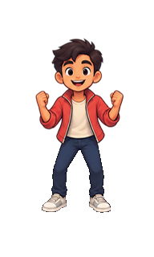
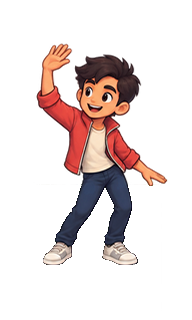
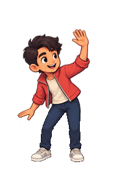
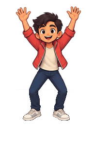
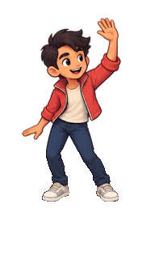
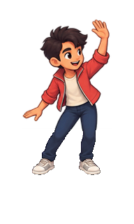

Dancing player
Six frames · 8 fps · 128 × 128 tile footprint. Both previews use the stored ground anchor (96,248); the small pink cross marks the fixed ground point.
Frame 1 / 6






Open transparent spritesheet
Pilot dance cycle: the final two poses are similar and the loop has visible height variation. The removed calibration floor has an approximate matte around mixed shoe edges and a few faint floor-line remnants.